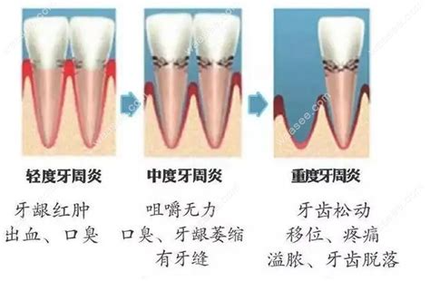
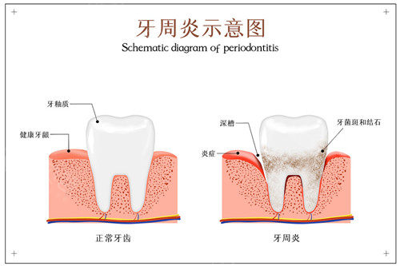

牙周炎
危险程度
高风险
就医建议
及时就医检查
最佳就医时间
发现牙龈异常、口腔异味、牙齿敏感或咬合不适及时就医
什么是牙周炎
牙周炎是一种常见的慢性口腔疾病，主要由牙菌斑、牙石等刺激引起牙周组织（包括牙龈、牙周膜、牙槽骨和牙骨质）的慢性炎症。
关键特征：
- 牙槽骨吸收、牙周袋形成、牙龈萎缩
- 牙龈萎缩、颜色苍白或暗红
- 牙槽骨发生进行性吸收，牙齿松动
- 真性牙周袋形成
牙周炎分类
菌斑相关性牙周炎
由牙菌斑感染引发，是最常见的类型，占牙周炎病例的绝大多数
非菌斑性牙周炎
由全身疾病、遗传缺陷或创伤等因素引起，临床较少见
牙周-牙髓联合病变
牙周组织与牙髓（牙神经）通过根尖孔、侧支根管等解剖通道相互感染，表现为牙周袋深、牙髓活力异常
儿童牙周炎
发生于乳牙列或混合牙列期儿童，多与口腔卫生差、全身疾病（如粒细胞缺乏症）相关
图示说明：
图1：牙周炎发病机制示意图

上图展示了牙周炎的发病机制
图2：正常牙齿与牙周炎对比图

上图展示了正常牙齿与牙周炎的对比
主要症状
可视症状
牙龈炎症
牙龈红肿、牙龈出血、牙龈肿胀
牙周袋形成
形成深于 3 毫米的牙周袋，轻压牙龈可见牙周袋内有脓性分泌物溢出
牙槽骨吸收与牙齿松动
牙齿移位或松动、牙缝变大牙齿脱落
其他伴随症状
口臭
牙周袋内细菌代谢产物及脓性分泌物会导致口腔异味，且刷牙后难以缓解
咬合无力或疼痛
牙齿松动后，咀嚼时可能感到无力或疼痛，甚至出现持续性钝痛
牙龈退缩
炎症长期刺激可导致牙龈向牙根方向退缩，暴露牙颈部或牙根，引起牙齿敏感（遇冷、热、酸刺激时疼痛）
进展特点
早期
牙龈炎症为主，形成牙周袋，可能有轻微牙龈退缩
中期
牙龈炎症加重，牙周袋加深（深度达4-6毫米），牙齿出现轻度至中度松动
晚期
牙龈及牙周组织严重破坏，牙齿明显松动或脱落，可能伴随全身健康问题
治疗方法
基础治疗
- 龈上洁治
- 龈下刮治和根面平整
- 口腔卫生指导
药物治疗
- 局部用药（牙周袋内冲洗、局部上药）
- 全身用药（口服抗生素）
手术治疗
- 牙周翻瓣术
- 引导组织再生术
- 牙龈成形术 / 牙龈切除术
- 牙种植术（晚期拔牙后）
正畸治疗（辅助功能恢复）
- 适用情况：中期或稳定期牙周炎患者，存在牙齿移位、咬合紊乱（如前牙扇形外展）
预防建议
做好口腔清洁
正确刷牙、彻底清洁牙缝、定期专业清洁（清除牙结石）
均衡饮食
补充钙、维生素C和D，减少糖分和精细食物
定期检查
每6-12个月进行一次全面口腔检查
戒烟限酒
保持健康生活方式
推荐医院
北京同仁医院
北京市东城区东交民巷1号
010-58266699